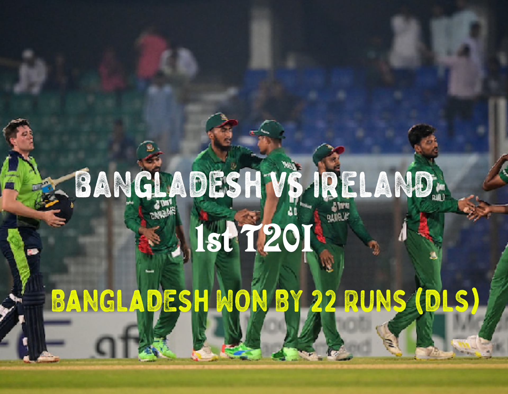

Another T20 Victory for Bangladesh
Yesterday, the first T20 match between Bangladesh and Ireland was held at Jahur Ahmed Chowdhury Stadium, Chattogram. Bangladesh batted really well and achieved a 22-run victory by the DLS method.
Toss Result
The Irish skipper Paul Stirling won the toss and chose to bowl first.
1st Innings
Bangladeshi openers Litton Kumar Das and Rony Talukdar scored 81 runs in the powerplay. Their storm continued until Litton Das got out on 47 in just 23 balls with a strike rate of 204.35. After the wicket of Litton Das, Rony continued his hitting until he was dismissed by Hume in the 14th over. Shamim Hossain played a little cameo of 30 in just 20 balls. The skipper Shakib Al Hasan also played a small knock of unbeaten 20 in 13 balls. After 19.2 overs, rain stopped the game and Bangladesh scored 207 runs in 19.2 overs.
The Bangladesh team put up an impressive batting performance with several contributions from their batsmen. However, they had to stop midway due to rain, which delayed the game for a while.
When the rain stopped, Ireland had the difficult target of 104 runs to chase in just 8 overs.
2nd Innings
The skipper Paul Stirling and Ross Adair started hitting from the very beginning of the run chase. Ireland scored 31 runs in the first two overs. In the third over, Hasan Mahmud picked up the wicket of Ross Adair with just 5 runs, and in the next over, Taskin picked up 3 more wickets. Ireland had 44-4 after 4 overs. They scored 16 runs in the 5th over. Then the skipper Shakib Al Hasan came and bowled a heroic over where he gave just 5 runs in the 6th over. In the last two overs, Ireland scored 16 runs, which was not enough for their victory.
Bangladesh achieved their victory of 22 runs (DLS). Rony Talukdar was declared the man of the match for his brilliant knock of 67 in just 38 deliveries. His contribution played a crucial role in setting up a high total for Bangladesh, which ultimately led to their victory.
The Bangladesh cricket team continues to show their dominance in T20 cricket and has once again proved their worth. They will look to continue this form in the upcoming matches against Ireland and other opponents as well.